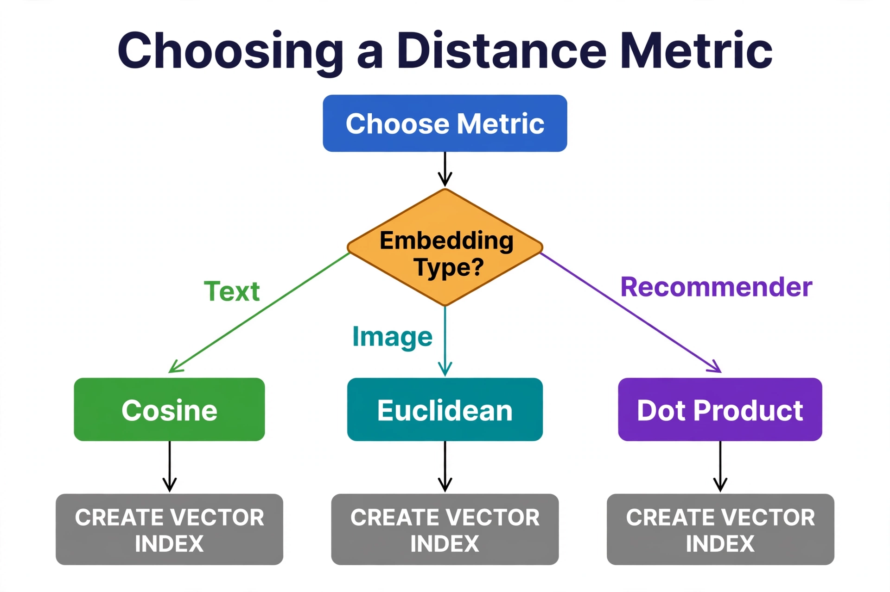

Chapter 3: Distance Metrics: Cosine, Euclidean, Dot Product
Every vector search query asks the same fundamental question: how similar is this vector to that one? The answer depends entirely on how you measure similarity — and that choice is not arbitrary. The three dominant distance metrics in production vector systems — cosine similarity, Euclidean distance, and dot product — each make different mathematical assumptions about what "closeness" means, and each is optimized for different embedding types, storage architectures, and query patterns. Getting this wrong means your semantic search returns irrelevant results, your recommendation engine surfaces stale content, and your RAG pipeline retrieves the wrong context — all while your vector index silently operates on numbers that look reasonable but mean nothing useful. This chapter gives you a precise, production-grounded understanding of all three metrics: the math behind them, how they behave with real embeddings, and how to configure them correctly in SQL Server 2025, Pinecone, Weaviate, and Qdrant.
---
Cosine: Angle, Not Length
Cosine similarity measures the angle between two vectors, ignoring their lengths. Two documents that say the same thing in different amounts of detail point in the same direction — cosine treats them as similar. This is why cosine is the default metric for text embeddings: most text models produce vectors whose magnitude carries little semantic meaning, and discarding it removes noise.
In SQL Server, cosine distance is a first argument to VECTOR_DISTANCE and the METRIC of your vector index. Note the convention: VECTOR_DISTANCE returns distance, where 0 means identical and smaller is more similar. Cosine similarity, the thing humans talk about, is 1 - distance, ranging from 1 (identical direction) through 0 (orthogonal) to −1 (opposite).
-- SQL Server 2025: cosine distance for text embeddings
CREATE TABLE dbo.Documents (
DocId INT IDENTITY(1,1) NOT NULL CONSTRAINT PK_Documents PRIMARY KEY,
Content NVARCHAR(MAX) NOT NULL,
SourceUrl NVARCHAR(500) NULL,
Embedding VECTOR(1536) NULL -- e.g. text-embedding-3-small
);
-- DiskANN index with cosine metric
CREATE VECTOR INDEX IX_Documents_Embedding
ON dbo.Documents (Embedding)
WITH (METRIC = 'cosine', TYPE = 'DiskANN', MAXDOP = 4);
-- Semantic search: TOP 5 by cosine distance
DECLARE @q VECTOR(1536) = '[0.12, 0.87, 0.34, ...]';
SELECT TOP (5)
DocId, Content, SourceUrl,
1 - VECTOR_DISTANCE('cosine', Embedding, @q) AS CosineSimilarity
FROM dbo.Documents
WHERE Embedding IS NOT NULL
ORDER BY VECTOR_DISTANCE('cosine', Embedding, @q);Cosine is the correct default when: your embedding model outputs normalized or near-normalized vectors (most modern text models do), document length varies, or you are doing semantic text search. Practically speaking, if your embeddings come from an OpenAI, Cohere, or sentence-transformer text model, start with cosine.
---
Euclidean (L2): Straight-Line Distance
Euclidean distance measures the straight-line distance between two points in vector space — the ruler measurement. Unlike cosine, it cares about magnitude. Two vectors pointing the same direction but with very different lengths are far apart in L2. This makes L2 the right metric when magnitude carries meaning: image embeddings where brightness and contrast encode into vector length, audio embeddings where energy matters, or scientific sensor data where the actual values are the point.
-- SQL Server 2025: L2 distance for image embeddings
CREATE TABLE dbo.ProductImages (
ImageId INT IDENTITY(1,1) NOT NULL CONSTRAINT PK_ProductImages PRIMARY KEY,
ProductId UNIQUEIDENTIFIER NOT NULL,
ImageUrl NVARCHAR(500) NOT NULL,
Embedding VECTOR(512) NULL -- e.g. CLIP ViT-B/32 output
);
-- Same index DDL, different metric
CREATE VECTOR INDEX IX_ProductImages_Embedding
ON dbo.ProductImages (Embedding)
WITH (METRIC = 'euclidean', TYPE = 'DiskANN', MAXDOP = 4);
-- Visual similarity: smaller L2 distance = more similar
DECLARE @qi VECTOR(512) = '[0.05, 0.41, ...]';
SELECT TOP (10)
ImageId, ProductId, ImageUrl,
VECTOR_DISTANCE('euclidean', Embedding, @qi) AS L2Distance
FROM dbo.ProductImages
WHERE Embedding IS NOT NULL
ORDER BY VECTOR_DISTANCE('euclidean', Embedding, @qi);A subtle but important relationship: for unit-normalized vectors, cosine distance and L2 distance produce identical rankings — the two metrics are monotonically related. This means if you normalize all embeddings at ingest time, you can use either metric and get the same top-k results. If you do not normalize, the choice genuinely changes results. Pick deliberately and document the decision next to the ingest code.
---
Dot Product: Magnitude-Aware Similarity
Dot product combines direction and magnitude: large dot products mean vectors point the same way and are long. Recommendation systems love it because magnitude often encodes a signal the model learned — popular or high-quality items get longer vectors in two-tower models, and dot product ranking surfaces them naturally. Dense Passage Retrieval (DPR) and many recommender architectures are trained with dot product as the scoring function, and switching metrics at serving time breaks the ranking the model learned.
-- SQL Server 2025: dot product for recommendation embeddings
-- Item embeddings are NOT normalized here — magnitude encodes the quality signal
CREATE TABLE dbo.ItemEmbeddings (
ItemId BIGINT NOT NULL CONSTRAINT PK_ItemEmbeddings PRIMARY KEY,
ItemType NVARCHAR(20) NOT NULL, -- 'article', 'product', 'video'
Embedding VECTOR(256) NULL -- two-tower model, 256-dim item tower
);
CREATE VECTOR INDEX IX_ItemEmbeddings_Embedding
ON dbo.ItemEmbeddings (Embedding)
WITH (METRIC = 'dot', TYPE = 'DiskANN', MAXDOP = 4);
-- VECTOR_DISTANCE('dot', ...) returns the NEGATIVE dot product:
-- ORDER BY ascending retrieves the highest dot product first
DECLARE @user VECTOR(256) = '[0.21, 0.03, ...]';
SELECT TOP (10)
ItemId, ItemType,
-VECTOR_DISTANCE('dot', Embedding, @user) AS DotProductScore
FROM dbo.ItemEmbeddings
WHERE ItemType = 'article'
AND Embedding IS NOT NULL
ORDER BY VECTOR_DISTANCE('dot', Embedding, @user); -- ascending = most similarThe sign convention is the classic source of dot-product bugs: 'dot' returns the negative dot product so the "smaller distance = more similar" convention holds across all three metrics. Negate it in the SELECT list for a human-readable score, but always ORDER BY the raw distance ascending. Mixing the two — sorting by the negated score ascending — silently inverts your recommendations, and the results look plausible enough that nobody notices for weeks.
---
The Metric Must Match Everywhere: Index, Query, and Model
Here is the production rule that prevents the worst metric bugs: the metric declared in CREATE VECTOR INDEX ... WITH (METRIC = ...), the metric argument in VECTOR_DISTANCE and VECTOR_SEARCH, and the metric your embedding model was trained with must all agree. If the index was built with 'cosine' and your query asks for 'euclidean', the optimizer cannot use the index for ranking — it falls back to a full scan, and latency jumps from milliseconds to seconds with no error, no warning. The query is "correct" in the sense that it returns rows, and silently slow.
-- Index built for cosine ...
CREATE VECTOR INDEX IX_Documents_Embedding
ON dbo.Documents (Embedding)
WITH (METRIC = 'cosine', TYPE = 'DiskANN');
-- ... then someone queries with euclidean: index NOT used, full scan
DECLARE @q VECTOR(1536) = '[0.12, 0.87, ...]';
SELECT TOP (10) DocId,
VECTOR_DISTANCE('euclidean', Embedding, @q) AS D -- metric mismatch!
FROM dbo.Documents
ORDER BY D;
-- Confirm which path the plan takes (Chapter 14 covers vector plan analysis):
-- check sys.dm_exec_query_stats for CPU regression after any metric changeEncode the metric in infrastructure-as-code alongside the index definition, and treat any metric change as a schema migration: it means dropping and rebuilding the vector index (and possibly re-embedding with a different model). The same discipline applies across systems with different names for the same math — Pinecone calls it dotproduct, Qdrant calls it DOT, Weaviate uses L2_SQUARED for Euclidean. Build a reference table for your team so nobody has to guess across a system boundary.
---
Normalization: Decide It at Ingest Time
A decision that quietly interacts with everything above: whether vectors are L2-normalized before storage. SQL Server has no built-in normalize function for vectors, so normalization happens in your ingest pipeline (a one-liner in numpy or in the embedding client). Normalizing at ingest makes cosine and dot product rankings equivalent, makes Euclidean rankings equal to cosine rankings, and lets you store one representation that serves all three metrics. The cost is losing magnitude information — exactly the signal dot-product recommenders rely on. So the rule is simple: normalize at ingest for search and RAG workloads; keep raw magnitudes for recommender and retrieval models trained on dot product.
If you normalize at ingest, switching metrics later only requires rebuilding the index with the new METRIC — the stored data is already compatible. If you stored raw vectors, switching from dot product to cosine changes rankings and demands revalidation of your evaluation set. This is why the metric decision belongs in the same design review as chunking and the embedding model, not as a query-time afterthought.

The Embedding Type? diamond (amber) routes to three metrics: Text (green) → Cosine, Image (teal) → Euclidean, Recommender (purple) → Dot Product. Each lands in CREATE VECTOR INDEX (gray) with the matching METRIC string. The critical detail the diagram encodes: query with the same metric string you indexed with — a cosine query against a euclidean index silently goes unused, and nothing in the error log will tell you.
---
Evaluating Metrics on Your Data, Not on Intuition
When two metrics both seem plausible — cosine vs dot product for a new recommender, L2 vs cosine for image search — decide empirically. The evaluation harness pattern is the same regardless of system: a few hundred labeled query-document pairs, a recall@k or precision@k computation per metric, and the winner documented in the runbook.
# Python — comparing metrics offline before committing to an index config
import numpy as np
def recall_at_k(query_emb, doc_embs, relevant_ids, k=10, sim_fn=None):
scores = sim_fn(query_emb, doc_embs)
top_k = set(np.argsort(scores)[-k:]) # highest scores = most similar
return len(top_k & relevant_ids) / len(relevant_ids)
def cosine_sim(q, docs):
q = q / np.linalg.norm(q)
docs = docs / np.linalg.norm(docs, axis=1, keepdims=True)
return docs @ q
def dot_sim(q, docs):
return docs @ q
def neg_l2(q, docs): # negate so higher = more similar
return -np.linalg.norm(docs - q, axis=1)
# Run all three against your labeled set, pick the metric with the best
# recall@10, then build the DiskANN index with that METRIC valueRun this against a representative slice of your production query distribution — at least a few hundred labeled pairs — before committing to an index configuration. Rebuilding a DiskANN index with a different metric is non-trivial once millions of vectors are stored, and if the metric change also implies a different normalization policy, the re-ingest cost dwarfs the index rebuild.
---
Key Takeaways
'cosine', 'euclidean', 'dot' — used in VECTOR_DISTANCE, VECTOR_SEARCH, and CREATE VECTOR INDEX ... WITH (METRIC = ...). 'dot' returns the negative dot product: negate for display, sort ascending.QueryOptimizer — Self-Hosted SQL Performance Workbench
EXPLAIN visualizer · Index advisor · Slow query dashboard · SQL Server
Test yourself on this chapter
5 questions · instant scoring · explanations included